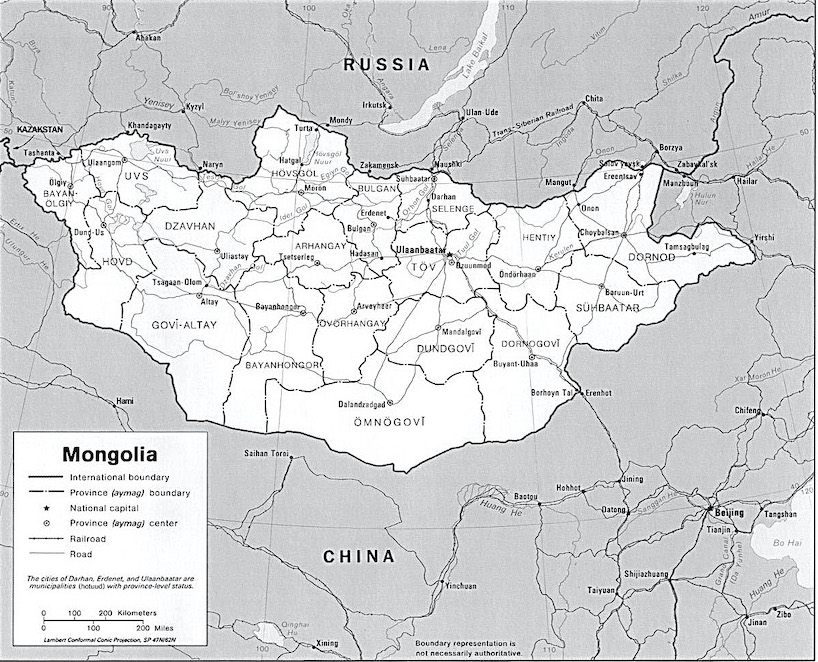

Ulaanbaatar, literally "Red Hero" is the capital and largest city of Mongolia. It is situated between Russia to the north and China to the south, where it neighbours the Inner Mongolia Autonomous Region. Mongolia does not share a border with Kazakhstan, although only 37 kilometres separate them. Ulaanbaatar was founded in 1639 as a nomadic Buddhist monastic centre.
